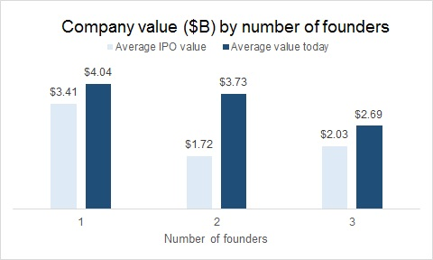

Venture capitalists and successful startup founders have emphasized that who you choose as co-founders is more important than the idea itself. In general two co-founders is the most ideal, with three sometimes being better. To support this claim, I examined the the IPOs of the 100 most valuable companies that have gone public in the last decade to determine if there were patterns in number of co-founders, backgrounds of founders, and where these co-founders met.
The data shows that the vast majority of companies (89%) have 1-3 founders with two being the most prevalent. One piece of information that would be critical to be able to conclude that two (or three in some cases) is ideal is the startup success rate by number of founders (e.g. IPOs by one / two / three founders, divided by total number of companies started by one / two / three founders).
In terms of value creation companies with one founder had the highest IPO and current day values, however there are likely too many factors (e.g. industry of company, year of IPO) to correlate number of founders and value creation.
Given prevailing expert opinions that single founders raise less funding and have lower rates of success, is there a pattern behind the success of the 27 single founders of the top 100 companies that have IPOed in the last decade? Upon examining the backgrounds of the 27 companies with single founders, distinct patterns arose:
While founding a company by oneself is generally not recommended, based on the examination of the 27 founders, those with significant previous entrepreneurial ventures or deep expertise and experience in the industry can overcome the odds and achieve success. It is also possible that these characteristics may just be table stakes in achieving startup success.
For those looking for co-founders, can there be lessons learned from the 62 companies with 2-3 co-founders? While information regarding the founding of many of these companies is less readily available, high level examination of where the startup co-founders met each other include previous startup endeavours, undergraduate and graduate school, and from working together at companies. It appears that few co-founders selected each other on the basis of friendship and many had experience working with each other prior to founding their successful IPO company together, thus they likely had a strong understanding of each other’s character traits, working styles, and strengths / weaknesses.